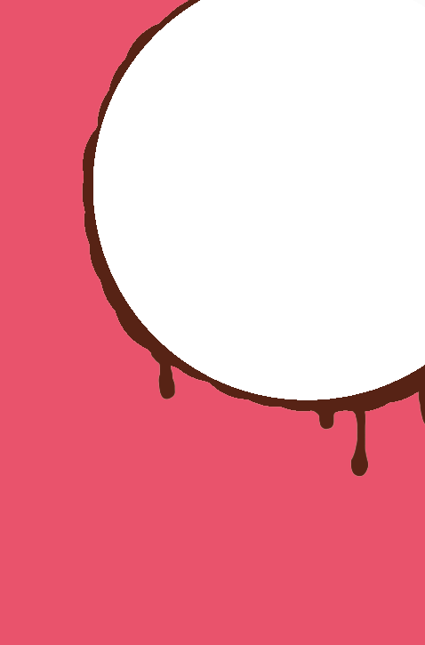

个人简历
求职意向：前端开发
个人信息
- 刘佳美
- 本科
- 信息管理与信息系统
- 天津大学仁爱学院
- 北京
技能水平
html5
css3
ajax
jquery
技能水平
jsonp
less
nodejs
angularjs
CET-4
工作经验
2015/09--2016/06
北京一虎科技有限公司
程序设计/网络游戏
熟练使用cocos2d-js语言
自我评价
1.对技术充满好奇心，良好英文阅读能力，善于通过Google，GitHub ,Api文档及官方站点等渠道解决问题；
2.能够快速的适应各种工作环境，具有良好的分析能力，自学能力，具有良好的人际交往、沟通协调能力以及团队精神，能吃苦；
3.热爱瑜伽、骑行等运动，喜欢周游世界。在压力下懂得给自己解压，放松心态
联系方式
contact with me
2317367758
13516180275
https://liujiamei.github.io/my-induction/